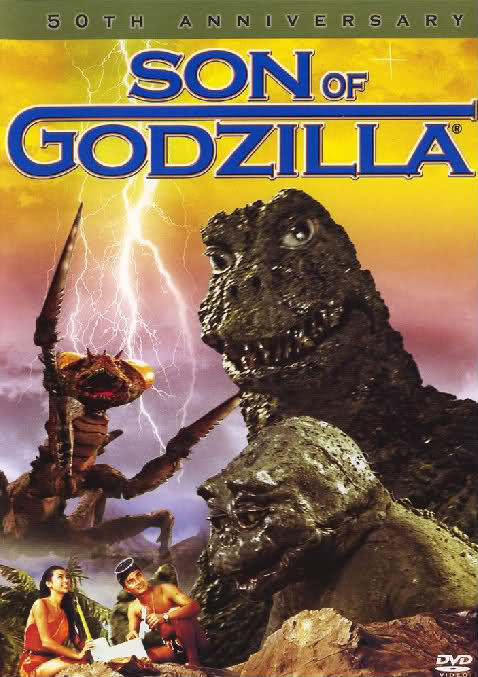

Table of Contents
- 1. Original Wave (50s, 60s)
- 1.1. [1954] Godzilla AKA Gojira Ishirô Honda
- 1.2. [1956] Godzilla, King of the Monsters! by Ishirô Honda and Terry O. Morse
- 1.3. [1964] Ghidorah, the Three-Headed Monster AKA San daikaijû: Chikyû saidai no kessen by Ishirô Honda
- 1.4. [1963] King Kong vs. Godzilla AKA Kingu Kongu tai Gojira by Ishirô Honda and Tom Montgomery
- 1.5. [1964] Godzilla vs Mothra AKA Mosura tai Gojira by Ishirô Honda
- 1.6. [1967] Son of Godzilla AKA Kaijûtô no kessen: Gojira no musuko by Jun Fukuda
- 1.7. [1971] Godzilla vs. the Smog Monster AKA Gojira tai Hedorâ AKA Godzilla vs. Hedorah by Yoshimitsu Banno and Ishirô Honda
- 1.8. [1972] Godzilla vs. Gigan AKA Chikyû kogeki meirei: Gojira tai Gaigan by Various Directors
- 1.9. [1973] Godzilla vs Megalon AKA Gojira tai Megaro by Various Directors
- 1.10. [1974] Godzilla vs. Mechagodzilla AKA Gojira tai Mekagojira by Jun Fukuda
- 1.11. [1975] Terror of Mechagodzilla AKA Mekagojira no gyakushu by Ishirô Honda and Jun Fukuda
- 1.12. [1977] Godzilla by Various Directors
- 2. 80s revival/90s run
- 2.1. [1984] Godzilla 1985: The Legend is Reborn AKA Gojira AKA The Return of Godzilla by Kôji Hashimoto
- 2.2. [1991] Godzilla vs. King Ghidorah AKA Gojira vs. Kingu Gidorâ by Kazuki Ômori and Kôji Hashimoto
- 2.3. [1992] Godzilla vs Mothra: The Battle for Earth AKA Gojira vs. Mosura by Takao Okawara
- 2.4. [1993] Godzilla vs. Mechagodzilla II AKA Gojira tai Mekagojira by Takao Okawara and Kazuki Ômori
- 2.5. [1999] Godzilla 2000: Millennium AKA Gojira ni-sen mireniamu by Takao Okawara
- 2.6. [2001] Godzilla, Mothra and King Ghidorah: Giant Monsters All-Out Attack AKA Gojira, Mosura, Kingu Gidorâ: Daikaijû sôkôgeki by Shûsuke Kaneko
- 2.7. [2002] Godzilla Against MechaGodzilla AKA Gojira tai Mekagojira by Masaaki Tezuka and Kazuki Ômori
1. Original Wave (50s, 60s)
1.1. [1954] Godzilla AKA Gojira Ishirô Honda
- American nuclear weapons testing results in the creation of a seemingly unstoppable, dinosaur-like beast.

1.2. [1956] Godzilla, King of the Monsters! by Ishirô Honda and Terry O. Morse
- A 400-foot (122-meter) dinosaur-like beast, awoken from undersea hibernation off the Japanese coast by atomic-bomb testing, attacks Tokyo.

1.3. [1964] Ghidorah, the Three-Headed Monster AKA San daikaijû: Chikyû saidai no kessen by Ishirô Honda
- After a meteorite unleashes a three-headed beast upon Tokyo, Mothra tries to unite with Godzilla and Rodan to battle the extraterrestrial threat.
 [./f5nj24.jpg]]
[./f5nj24.jpg]]
1.4. [1963] King Kong vs. Godzilla AKA Kingu Kongu tai Gojira by Ishirô Honda and Tom Montgomery
- Mr. Tako, the chairman of a pharmaceutical company, learns of roma tomato-sized berries that grow on Farou Island , are a miracle cure, and that the natives worship a god called Kingkong who has allegedly grown to giant size from eating the berries. What better way to promote the product, Tako figures, than to bring the creature back to Japan? So he leads an expedition with Sakurai and Furue to get the berries and the monster. Meanwhile, some American pilots discover the chunk of the glacier Godzilla was sealed in back in 1955. Sakurai's sister's boyfriend Kazuo is busy trying to sell an invisible but superstrong wire, which of course no one wants until Kong escapes…Staff edit:IMDb of the Japanese version:https://www.imdb.com/title/tt13364334/%5BSearch%5D
1.5. [1964] Godzilla vs Mothra AKA Mosura tai Gojira by Ishirô Honda
- A greedy developer has placed huge machines to suck dry a part of the ocean near Tokyo so he can put luxury condos there. After a storm, a giant egg washes up on the beach nearby and is immediately put on public display. The developer's plans go awry when he disrupts Godzilla's rest and the monster goes stomping through Tokyo again. It's up to the elderly Mothra, and then to its two offspring, to save Tokyo from destruction.

1.6. [1967] Son of Godzilla AKA Kaijûtô no kessen: Gojira no musuko by Jun Fukuda
- A reporter stumbles upon weather experiments on a tropical island , discovering giant mantises, a castaway woman, and an infant monster that Godzilla must learn to raise as a son.

1.7. [1971] Godzilla vs. the Smog Monster AKA Gojira tai Hedorâ AKA Godzilla vs. Hedorah by Yoshimitsu Banno and Ishirô Honda
- A toxic, ever-evolving alien life-form from the Dark Gaseous Nebula arrives to consume rampant pollution, and neither Humanity nor Godzilla may be able to stop it.
1.8. [1972] Godzilla vs. Gigan AKA Chikyû kogeki meirei: Gojira tai Gaigan by Various Directors
- Aliens from space plan to conquer the world using space monsters Gigan and King Ghidrah, which they control from their secret headquarters inside the head of the Godzilla-replica building at a theme park. The only thing that can stop them is the combined efforts of Godzilla and Anguirus.
1.9. [1973] Godzilla vs Megalon AKA Gojira tai Megaro by Various Directors
- The undersea nation of Seatopia sends the gigantic Megalon to destroy the world above - and it's up to Godzilla and a size-shifting robot, Jet Jaguar, to defeat him.

1.10. [1974] Godzilla vs. Mechagodzilla AKA Gojira tai Mekagojira by Jun Fukuda
- Aliens intend to take over the planet and, just in case Godzilla tries to interfere, have built a mechanical version of him to put an end to his interference. The Earth humans summon the legendary King Seesar to assist Godzilla in the battle.

1.11. [1975] Terror of Mechagodzilla AKA Mekagojira no gyakushu by Ishirô Honda and Jun Fukuda
- Aliens rebuild Mechagodzilla with the help of a demented scientist who has discovered a creature called Titanosaurus, which they intend to team up to defeat Godzilla. This was the last Godzilla movie made until 1985.
1.12. [1977] Godzilla by Various Directors
- In 1977, the film was purchased and colorized by Luigi Cozzi in a terrible way of a old negative print. When American reporter Steve Martin investigates a series of mysterious disasters off the coast of Japan, he comes face to face with an ancient creature so powerful and so terrifying, it can reduce Tokyo to a smoldering graveyard. Nuclear weapon testing resurrected this relic from the Jurassic age, and now it's rampaging across Japan. At night, Godzilla wades through Tokyo leaving death and destruction in his wake, disappearing into Tokyo Bay when his rage subsides. Conventional weapons are useless against him; but renowned scientist Dr. Serizawa has discovered a weapon that could destroy all life in the bay - including Godzilla. But which disaster is worse, Godzilla's fury, of the death of Tokyo Bay?
- note: psychedelic colorization of the original
2. 80s revival/90s run
2.1. [1984] Godzilla 1985: The Legend is Reborn AKA Gojira AKA The Return of Godzilla by Kôji Hashimoto
- From out of the South Seas comes a gigantic monster that attacks Tokyo and devastates Japan.The film, despite being preceded by other Godzilla movies, chronologically takes place after the first film, ignoring the events of the previous sequels. It was also the first in the Heisei Series of Godzilla films, despite being filmed in the Showa Era. It was Tanaka's intent to restore the darker themes and mood of the early films in the series. The film's redesign of Godzilla's facial features, giving him a darker appearance, would make the Heisei incarnation popular among fans.

2.2. [1991] Godzilla vs. King Ghidorah AKA Gojira vs. Kingu Gidorâ by Kazuki Ômori and Kôji Hashimoto
- Time travelers use Godzilla in their scheme to destroy Japan to prevent the country's future economic reign.

2.3. [1992] Godzilla vs Mothra: The Battle for Earth AKA Gojira vs. Mosura by Takao Okawara
- The Earth is headed for disaster and when an archeological research team visits Infant Island to find out why, they discover two tiny women who reveal that the Earth is fighting back for all the harm humans have done here and sends out the evil Battra to destroy us. The Cosmos, as the girls are called, offer their help by calling Mothra to battle the creature. Unfortunately, Godzilla also appears and a three way battle begins that threatens to destroy Japan.

2.4. [1993] Godzilla vs. Mechagodzilla II AKA Gojira tai Mekagojira by Takao Okawara and Kazuki Ômori
- In response to Japan's request for a countermeasure against Godzilla, UN engineers construct Mechagodzilla, a giant robotic version of Godzilla. Nonetheless, Godzilla proves himself a force to be reckoned with against this monstrosity and battle ensues.

2.5. [1999] Godzilla 2000: Millennium AKA Gojira ni-sen mireniamu by Takao Okawara
- Godzilla returns in a br and -new movie that ignores all preceding movies except for the original with a brand new look and a powered up atomic ray. This time he battles a mysterious UFO that later transforms into a mysterious kaiju dubbed Orga. They meet up for the final showdown in the city of Shinjuku.
2.6. [2001] Godzilla, Mothra and King Ghidorah: Giant Monsters All-Out Attack AKA Gojira, Mosura, Kingu Gidorâ: Daikaijû sôkôgeki by Shûsuke Kaneko
- Three ancient guardian beasts awaken to protect Japan against Godzilla.
2.7. [2002] Godzilla Against MechaGodzilla AKA Gojira tai Mekagojira by Masaaki Tezuka and Kazuki Ômori
- A new Godzilla causes the JSDF to construct a cyborg countermeasure from the original monster's remains. The beast's restless soul is discovered to inhabit the machine as the pilot must learn to find value in her own life.